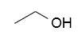

Loading and Saving Molecule¶
Module Kekule.IO provides a series of methods to perform input and output of molecule (and other chemistry objects).
Saving Molecule [1]¶
To save molecule, just use saveFormatData:[3]
var data = Kekule.IO.saveFormatData(mol, 'cml');
// or Kekule.IO.saveMimeData(mol, 'chemical/x-cml');
console.log(data);
var data = Kekule.IO.saveFormatData(mol, 'mol');
// or Kekule.IO.saveMimeData(mol, 'chemical/x-mdl-molfile');
console.log(data);
var data = Kekule.IO.saveFormatData(mol, 'smi');
// or Kekule.IO.saveMimeData(mol, 'chemical/x-daylight-smiles');
console.log(data);
The return data usually is a string.
Loading Molecule [1]¶
Loading from String Variable¶
Saving molecule is rather simple, but loading is another story.
The data source may be a string, in that case, loading process
is quite simple by just calling Kekule.IO.loadFormatData:[3]
var cmlData = '<cml xmlns="http://www.xml-cml.org/schema"><molecule id="m1"><atomArray><atom id="a2" elementType="C" x2="7.493264658965051" y2="35.58088907877604"/><atom id="a3" elementType="O" x2="8.186084981992602" y2="35.18088907877604"/><atom id="a1" elementType="C" x2="6.800444335937501" y2="35.18088907877604"/></atomArray><bondArray><bond id="b2" order="S" atomRefs2="a2 a3"/><bond id="b1" order="S" atomRefs2="a2 a1"/></bondArray></molecule></cml>';
var mol = Kekule.IO.loadFormatData(cmlData, 'cml');
// or Kekule.IO.loadMimeData(cmlData, 'chemical/x-cml');
The molecule read from string will be returned immediately. For example, the ethanol molecule loaded in the above example:
Loading from File¶
It is a common request to load molecule from source file. The toolkit provides
two methods for that task: Kekule.IO.loadUrlData and Kekule.IO.loadFileData.
The loadUrlData method fetches data from a remote file URL, either a absolute path (like
http://www.mysite.com/myMolecule.cml) or a relative path (like data/myMolecule.cml). The
method loads source file by AJAX, so it
shares the same limitations with AJAX (e.g.,
same-origin policy). Local files usually
can not be loaded by this method either.
Since transferring data through network may cost quite a long time, loadUrlData use the
asynchronous model to return result. It accept two parameter, first one is the URL of source,
the second one is a callback function which will be called when the loading process is done.
User should check the molecule loaded in this callback function:[3]
var url = 'data/mol2D/quinone.mol';
Kekule.IO.loadUrlData(url, function(mol, success){
if (success)
{
console.log('Loading from ' + url + ' Successful');
showMolecule(mol);
}
else
{
console.log('Loading from ' + url + ' Failed');
}
});
In modern web browsers, local source file can also be loaded by Kekule.IO.loadFileData and
File API.
Here is the example:[3]
document.getElementById('inputFile').addEventListener('change', function()
{
var file = document.getElementById('inputFile').files[0];
if (file)
{
Kekule.IO.loadFileData(file, function(mol, success)
{
if (success && mol)
showMolecule(mol);
});
}
});
It is notable that loadFileData also uses the asynchronous model and needs a callback function.
Loading from Resource [2]¶
Kekule.js provides another way to utilize source data: the resource identifier.
With this form, user can even embed molecule data into HTML element. For example,
HTML <script> tag is ideal to embed a piece of molecule data:
<script id="molResInsideElem" type="chemical/x-mdl-molfile">
CDK 9/19/06,14:29
12 12 0 0 0 0 0 0 0 0999 V2000
415.0000 974.0000 0.0000 C 0 0 0 0 0 0 0 0 0 0 0 0
383.8231 992.0000 0.0000 C 0 0 0 0 0 0 0 0 0 0 0 0
383.8231 1028.0000 0.0000 C 0 0 0 0 0 0 0 0 0 0 0 0
415.0000 1046.0000 0.0000 O 0 0 0 0 0 0 0 0 0 0 0 0
446.1769 1028.0000 0.0000 C 0 0 0 0 0 0 0 0 0 0 0 0
446.1769 992.0000 0.0000 C 0 0 0 0 0 0 0 0 0 0 0 0
352.6462 1046.0000 0.0000 C 0 0 0 0 0 0 0 0 0 0 0 0
352.6462 1082.0000 0.0000 O 0 0 0 0 0 0 0 0 0 0 0 0
352.6462 974.0000 0.0000 O 0 0 0 0 0 0 0 0 0 0 0 0
415.0000 938.0000 0.0000 O 0 0 0 0 0 0 0 0 0 0 0 0
477.3538 974.0000 0.0000 O 0 0 0 0 0 0 0 0 0 0 0 0
477.3538 1046.0000 0.0000 O 0 0 0 0 0 0 0 0 0 0 0 0
1 2 1 0 0 0 0
2 3 1 0 0 0 0
3 4 1 0 0 0 0
4 5 1 0 0 0 0
5 6 1 0 0 0 0
6 1 1 0 0 0 0
3 7 1 1 0 0 0
7 8 1 0 0 0 0
2 9 1 6 0 0 0
1 10 1 1 0 0 0
6 11 1 1 0 0 0
5 12 1 0 0 0 0
M END
</script>
The example above actually embeds a MOL2000 file data into HTML and later the data
can be easily accessed by id of the <script> tag. Note the type attribute
of <script> tag, it should be set to the right MIME type of data, otherwise
molecule can not be successfully loaded. This type of data block is called resource
in Kekule.js.
The resource may link to external file as well:
<link id="molResExternalLink" href="./data/mol2D/porphyrin.mol" type="chemical/x-mdl-molfile" />
Resource can be loaded and parsed by Kekule.IO.loadResourceData:
// resource is referred by url(#id), similar to CSS URI
var resId = 'url(#molResInsideElem)';
Kekule.IO.loadResourceData(resId, function(mol, success)
{
if (success)
{
console.log('Loading from ' + resId + ' Successful');
showMolecule(mol);
}
else
{
console.log('Loading from ' + resId + ' Failed');
}
});
var resId = 'url(#molResExternalLink)';
Kekule.IO.loadResourceData('url(#molResExternalLink)', function(mol, success)
{
if (success)
{
console.log('Loading from ' + resId + ' Successful');
showMolecule(mol);
}
else
{
console.log('Loading from ' + resId + ' Failed');
}
});
Note the resource loading process is also asynchronous and requires a callback.
| [1] | (1, 2) To read and write molecule, IO module must be loaded, e.g.: |
<script src="kekule.js?module=io"></script>
| [2] | To load data from resource, both IO and HTML module must be used, e.g.: |
<script src="kekule.js?module=io,html"></script>
| [3] | (1, 2, 3, 4) Example of this chapter can be found and run at here. |